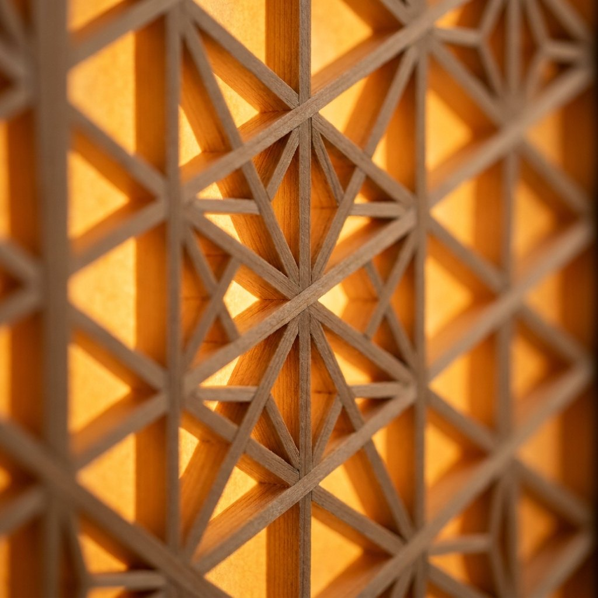
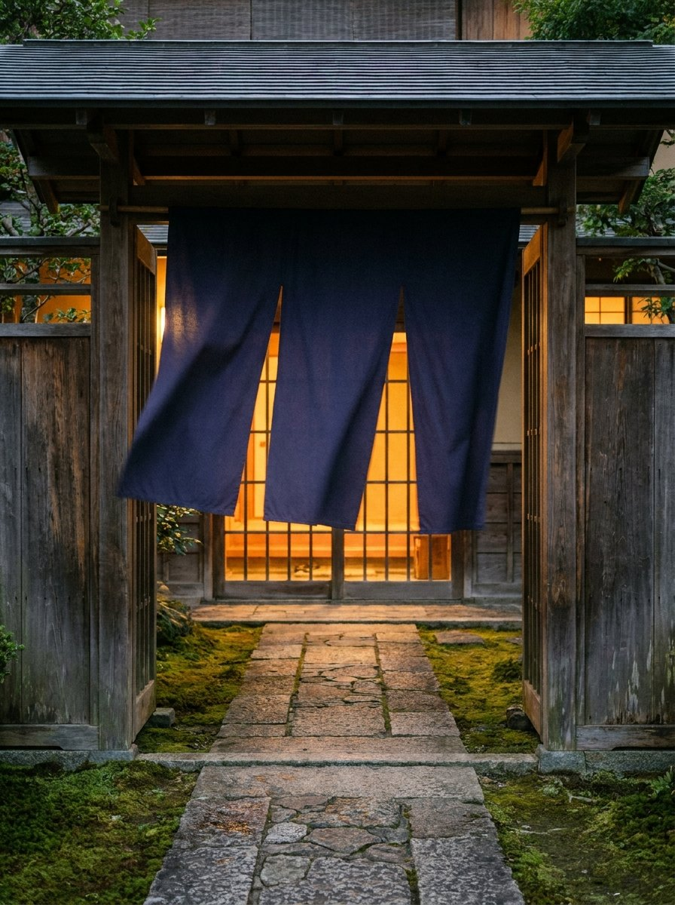
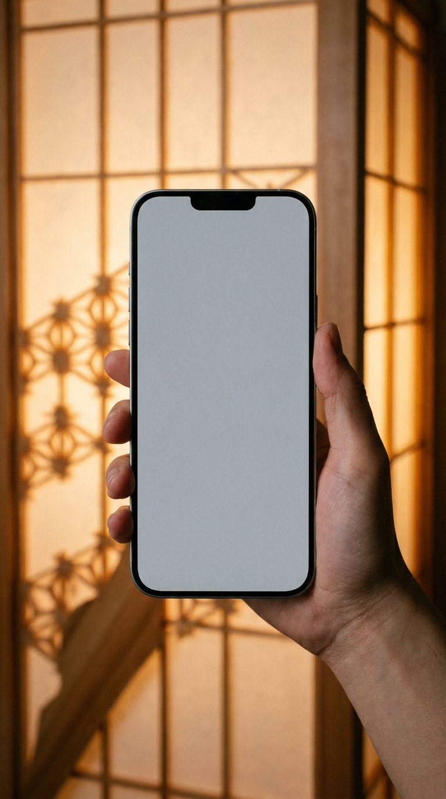

Znajduję to, czym Twoja firma się różni.
Istota marki w jednym zdaniu: rozumiem firmę, a potem buduję stronę, program albo automatyzację, która tę różnicę pokazuje i wykorzystuje.
Każda firma ma cechę, którą klienci znają z wizyty, a której nie widać w internecie. Moja praca zaczyna się od jej znalezienia (opinie, miejsce, rozmowa), a kończy na jednej dopracowanej rzeczy, którą klienci zapamiętają.
- Cel istnienia: małe firmy zasługują na strony tak dobre jak duże marki, ale własne, nie z szablonu.
- Misja: wyciągnąć z firmy to, co ją wyróżnia, i pokazać to klientom.
- Wizja: lokalne firmy z regionu wyglądają w sieci lepiej niż sieciówki.
- Obietnica: Twój partner technologiczny: od prostej wizytówki po zaawansowane systemy.
- Rola: partner, czyli rzemieślnik i doradca w jednej osobie, który zostaje z firmą na dłużej.
| Wymaganie | Konsekwencja wykonawcza |
|---|---|
| Każda realizacja ma własny pomysł | Brak szablonów; sygnatura opisana w DESIGN.md projektu |
| Praca zaczyna się od researchu | Opinie, miejsce i konkurencja przed pierwszym szkicem |

Jedna osoba od rozmowy do publikacji.
Marka nazywa się tak jak jej twórca. Klient wie, z kim rozmawia, i ta sama osoba odbiera telefon po publikacji.
Adrian Wojtasik: filologia angielska, magisterka z psychologii i informatyki (projektowanie systemów inteligentnych) na WSB Merito, wcześniej własna firma w nieruchomościach. Mieszka pod Wrocławiem i pracuje z firmami z Oławy, Oleśnicy, Wrocławia i zdalnie z całej Polski.
Psychologia tłumaczy, dlaczego klient klika, a dlaczego wychodzi. Informatyka pozwala to zbudować. Te dwie rzeczy razem są rdzeniem marki.
| Wymaganie | Konsekwencja wykonawcza |
|---|---|
| Marka osobista | Imię i nazwisko w logo; w tekstach pierwsza osoba liczby pojedynczej |
| Wiarygodność | Prawdziwe zdjęcia Adriana, nigdy generowane |
Premium blisko, nie katalog z regionu.
Lokalni wykonawcy mówią językiem katalogu, a premium freelancerzy pokazują projekty dla fikcyjnych marek. Wolne miejsce: jakość premium dla prawdziwych firm z regionu.
- Wszyscy piszą „nowoczesne, responsywne, profesjonalne”. My tych słów nie używamy.
- Ceny na rynku: od 200 do 7 000 zł za podobnie nazwany produkt. Pokazujemy, co klient dostaje, zamiast licytować w dół.
- Ruch i grafika AI stają się standardem. Wyróżnia powód efektu: pomysł wzięty z firmy klienta.
- Automatyzacje sprzedaje się żargonem. Mówimy skutkiem.
| Wymaganie | Konsekwencja wykonawcza |
|---|---|
| Pozycja: premium + lokalnie | Realizacje z nazwy i miejsca; spotkanie na miejscu w regionie |
| Różnica: prawdziwe firmy | Żadnych projektów koncepcyjnych w portfolio |
Shokunin, ma, kanso, kaizen.
Cztery japońskie pojęcia porządkują sposób pracy. To zasady, nie dekoracje.
- Shokunin: rzemieślnik oddany jednej rzeczy. Detal jest dopracowany, a każda realizacja jest podpisana.
- Ma: pusta przestrzeń, która coś znaczy. Dużo powietrza na stronie i cisza między sekcjami.
- Kanso: prostota. Jedna akcja na ekran.
- Kaizen: małe ulepszenia. Opieka po publikacji to stała usługa, nie dodatek.
| Wymaganie | Konsekwencja wykonawcza |
|---|---|
| Shokunin | Kontrola detalu przed oddaniem: lista z rozdziału 30 |
| Kaizen | Comiesięczny przegląd strony klienta w ramach opieki |

Od prostej wizytówki po zaawansowane systemy.
Trzy usługi ułożone jak droga przez ogród: od dnia do nocy, od prostego do złożonego.
- Strony internetowe (główny produkt): wizytówki, strony firmowe, sklepy. Od 2 000 zł netto (do potwierdzenia).
- Aplikacje i programy: rezerwacje, wyceny, ewidencja, panele. Wycena po rozmowie.
- Automatyzacje: zgłoszenia, wiadomości, zestawienia, które dzieją się same.
- Opieka: zmiany, aktualizacje, małe ulepszenia co miesiąc.
| Wymaganie | Konsekwencja wykonawcza |
|---|---|
| Strony jako wejście | Na stronie pierwsza i najszersza sekcja oferty |
| Cena „od” | Podana jawnie; dokładna kwota po pierwszej rozmowie |
Wiesz, co dostaniesz, zanim zaczniemy.
Obietnica partnera spełnia się w obsłudze: termin, cena i zakres są ustalone przed startem, a zmiany są normalne.
- Rozmowa (telefon albo spotkanie w regionie) → research → jeden pomysł → projekt → budowa → publikacja → opieka.
- Odpowiedź na zapytanie: w ciągu jednego dnia roboczego.
- Zmiany w trakcie: omawiane od razu; cena zmienia się tylko, gdy zmienia się zakres.
| Wymaganie | Konsekwencja wykonawcza |
|---|---|
| Jawny proces | Sekcja „Jak pracuję” z 7 krokami na stronie |
| Szybka odpowiedź | Telefon w nawigacji; formularz z maks. 4 polami |
Od dnia do nocy.
Historia marki to droga przez japoński ogród: za dnia spokój i porządek (wizytówka), nocą światło technologii (systemy).
Strona prowadzi tą samą drogą. Zaczyna się jasno: papier washi, mech, piasek. Im niżej, tym ciemniej, aż do nocnej części z programami i automatyzacjami, gdzie świeci jeden bursztynowy neon. Na końcu jest wejście z kotarą noren, czyli kontakt.
| Wymaganie | Konsekwencja wykonawcza |
|---|---|
| Narracja dzień → noc | Kolejność sekcji: strony → realizacje → programy → automatyzacje → kontakt |
| Jedno źródło światła | W każdym kadrze i sekcji nocnej jeden bursztynowy akcent |
Spokojnie, konkretnie, pewnie.
Mówię jak na spotkaniu: krótkie zdania, przykład zamiast teorii, forma „Ty”.
- TAK: spokojny, konkretny, pewny. NIE: nadęty, techniczny, sprzedażowy.
- Reguła: co zauważyłem → co z tym zrobię → co zyskasz → następny krok.
- Zakazane: nowoczesny, responsywny (jako zaleta), kompleksowy, innowacyjny, pasja, rozwiązania, wykrzykniki, emoji.
Zamiast „Tworzę nowoczesne, responsywne strony” piszę „Strona działa na telefonie tak samo dobrze jak na komputerze”. Zamiast „Automatyzacja procesów biznesowych” piszę „Zgłoszenie z formularza samo trafia do kalendarza”. Zamiast „Indywidualne podejście” piszę „Najpierw czytam Twoje opinie i przyjeżdżam zobaczyć miejsce”.
| Wymaganie | Konsekwencja wykonawcza |
|---|---|
| Teksty po humanizerze | Każdy tekst na stronie sprawdzony skillem humanizer |
| Forma „Ty” | Wszędzie, także w ofercie PDF i mailach |
Twórca, wspierany przez Mędrca.
Twórca buduje dopracowane rzeczy. Mędrzec najpierw rozumie. Partnerstwo jest rolą i tonem, nie trzecim archetypem.
- Twórca: każda realizacja ma autorski pomysł (brama, dzień i noc, kurtyna).
- Mędrzec: psychologia i decyzje oparte na opiniach klientów.
- Cień Twórcy: perfekcjonizm i dystans. Przeciwwaga: jasne etapy, termin i cena przed startem.
- Cień Mędrca: wykład i chłód. Przeciwwaga: krótkie zdania, forma „Ty”.
| Wymaganie | Konsekwencja wykonawcza |
|---|---|
| Ton | Spokojny, konkretny, pierwsza osoba |
| Ruch | Wolne odsłony, nic się nie kołysze |
| Zdjęcia | Warsztat, detale, miejsca; zero pozowania |
Ogród i neon.
Wszystko wynika z jednej metafory: japoński ogród (precyzja, cierpliwość, coś, co rośnie) i światło nowoczesnej technologii.
- Zieleń: mech, bambus, klony. Tradycyjne budynki: pawilony, werandy, shoji, latarnie. Piasek: grabiony ogród. Światło: bursztynowe linie LED, ekran, neon.
- Stały rekwizyt: w każdym kadrze jedno bursztynowe źródło światła technologii.
- Motywy graficzne: kratka kumiko i linie grabionego piasku.
- Zakazane: fałszywe kanji, samuraje, katany, gejsze, fonty udające pędzel. Brama torii jest znakiem marki (decyzja Fabiana 25.11), więc nie używamy jej jako zwykłej ozdoby w tłach.
- Test duszy: po zasłonięciu logo stronę rozpoznaje się po kratce kumiko, przejściu dzień → noc i bursztynowym świetle.
| Wymaganie | Konsekwencja wykonawcza |
|---|---|
| Japonia jako sceneria | Teksty, realizacje i kontakt zostają polskie i lokalne |

Spokój za dnia, światło nocą.
Kierunek kreatywny: dużo powietrza, duże zdjęcia, szeryfowe nagłówki i jedna linia światła prowadząca przez stronę.
- Kompozycja asymetryczna: zdjęcie z jednej strony, tekst z drugiej, jak ogród oglądany z werandy.
- Przejścia między sekcjami: przesuwane panele shoji i linie piasku.
- Animacje: linia światła zapala się od lewej do prawej; zdjęcia wyostrzają się przy wejściu.
| Wymaganie | Konsekwencja wykonawcza |
|---|---|
| Jedna linia światła | Element `.light-line` wraca w hero, przejściach i stopce |

Brama torii ze światłem technologii.
Znak to brama torii narysowana prostą, geometryczną linią. Poprzeczka nuki świeci bursztynem jak linia LED: tradycja i nowa technologia w jednym znaku. Brama to też wejście: od niej zaczyna się współpraca i strona.
- Wersje: pozioma (znak + nazwisko), sam znak, monochrom, na ciemnym (poprzeczka w kolorze Lampionu).
- Pole ochronne: wysokość belki kasagi dookoła znaku.
- Minimalny rozmiar: znak 20 px na ekranie, 6 mm w druku.
- Nie wolno: obracać, dodawać cienia, malować bramy na czerwono, zmieniać koloru poprzeczki na inny niż Bursztyn akcji lub Lampion.
- Intro strony: brama rysuje się linią, poprzeczka zapala się, przez bramę widać stronę, a potem przechodzimy przez nią do środka (raz na sesję, z przyciskiem „Pomiń”).
| Wymaganie | Konsekwencja wykonawcza |
|---|---|
| Brama = wejście | Intro na stronie głównej i animacja poprzeczki w logo |
Sumi, washi, piasek, mech, hinoki, lampion.
Siedem kolorów z ogrodu i nocy. Bursztyn świeci tylko na ciemnym, na jasnym działa jego ciemniejsza wersja.
#121311tekst, tła nocne#F2EFE7tło dnia#DCD3C1sekcje przyciemnione#33503Fakcenty na jasnym#C9A46Adrewno, linie#FFB547światło na ciemnym#8A5A12przyciski na jasnym| Para | Kontrast | WCAG |
|---|---|---|
| Sumi / Washi | 16,2:1 | AA |
| Sumi / Piasek | 12,5:1 | AA |
| Mech / Washi | 7,7:1 | AA |
| Mech / Piasek | 6,0:1 | AA |
| Lampion / Sumi | 10,6:1 | AA |
| Bursztyn akcji / Washi | 5,1:1 | AA |
| Bursztyn akcji / Piasek | 4,0:1 | tylko duży tekst i UI |
| Wymaganie | Konsekwencja wykonawcza |
|---|---|
| Lampion tylko na ciemnym | Na jasnym tle linki i przyciski w Bursztynie akcji |
| Na piasku linki w mchu | Bursztyn akcji na piasku ma 4,0:1, za mało dla tekstu |
Mincho do nagłówków, Plex do reszty.
Sawarabi Mincho to japoński szeryf z pełnym kompletem polskich liter. IBM Plex Sans i Mono to precyzyjny, techniczny grotesk.
- Display / H1: Sawarabi Mincho 400, 56–88 px, interlinia 1,05, tracking -0,02 em.
- H2: Sawarabi Mincho 400, 32–48 px.
- Tekst: IBM Plex Sans 400, 16–18 px, interlinia 1,6.
- Etykiety: IBM Plex Mono 500, 11–12 px, wersaliki, tracking 0,14 em.
- Licencje: wszystkie trzy OFL (pliki w brand/fonts). Uwaga: w małym „ś” kreska stoi na prawo, to cecha kroju.
| Wymaganie | Konsekwencja wykonawcza |
|---|---|
| Polskie znaki | Kroje sprawdzone na „Zażółć gęślą jaźń”; Shippori Mincho odrzucony (brak ą, ę, ś) |
IBM Plex Sans: Najpierw czytam Twoje opinie i przyjeżdżam zobaczyć miejsce.
IBM PLEX MONO · 01 / ROZMOWA → 02 / RESEARCH
Siatka kumiko.
Siatka 12 kolumn z delikatnymi liniami kratki w tle. Rytm pionowy jak deski werandy.
- Radius: 3 px. Linie: 1 px w kolorze mchu przy 10–14% krycia.
- Każda sekcja: etykieta mono → nagłówek mincho → krótki tekst → jedno wezwanie do działania.
- Sekcje dzienne na Washi i Piasku, nocne na Sumi.
| Wymaganie | Konsekwencja wykonawcza |
|---|---|
| Schemat sekcji | Stały dla wszystkich podstron |

Ogród, architektura i jedno światło.
Wszystkie zdjęcia mają wspólny świat: japońska sceneria, ciepłe, stonowane barwy i jedno bursztynowe źródło światła technologii.
- Źródło: Google Flow (Nano Banana Pro), prompty w image_prompts.md. Adnotacja: „Sceny ilustracyjne wygenerowane przez AI”.
- Pory: złota godzina, niebieska godzina, noc.
- Bez ludzi albo tylko dłonie lub postać od tyłu. Wizerunek Adriana wyłącznie z prawdziwych zdjęć.
- Eksport: 2K dla dużych zdjęć, WebP lub AVIF na stronie.
| Wymaganie | Konsekwencja wykonawcza |
|---|---|
| Spójność | Nowe kadry generowane tylko z gramatyki z image_prompts.md |
Twoja strona w moim ogrodzie.
Realizacje pokazujemy na urządzeniach w scenerii marki. Dzięki temu portfolio wygląda jak jedna seria.
Puste ekrany z kadrów Z11–Z15 wypełnia skrypt tools/mockup.py: wykrywa ekran, dopasowuje perspektywę i przenosi światło sceny na zrzut strony. Nowa realizacja wymaga tylko zrzutu (1440 px dla laptopa, 390 px dla telefonu).
| Wymaganie | Konsekwencja wykonawcza |
|---|---|
| Jedna seria | Każda realizacja: laptop + telefon w scenie z tego samego zestawu |
Wizytówka, oferta, teczka.
Druk powtarza układ dnia: papier washi, mech, znak z zapalonym oknem.
- Wizytówka 85×55 mm: awers Sumi ze znakiem (okno w Lampionie), rewers Washi z danymi i hasłem.
- Oferta PDF A4: okładka ze zdjęciem ogrodu, środek na Washi, wycena w tabeli.
- Papier: niepowlekany, kremowy, gramatura 350 g (wizytówki).
| Wymaganie | Konsekwencja wykonawcza |
|---|---|
| Zgodność kolorów | Druk w CMYK z próbnym wydrukiem Lampionu |
Strona jako spacer przez ogród.
Strona główna prowadzi od dnia do nocy. Podstrony usług mają ten sam schemat i kończą się innymi usługami oraz kontaktem.
- Hero: zdjęcie ogrodu z linią światła, hasło, telefon.
- Realizacje: urządzenia w scenach, z nazwą firmy i miejscowością.
- Programy i automatyzacje w części nocnej.
- Kontakt: wejście z noren, telefon i formularz.
| Wymaganie | Konsekwencja wykonawcza |
|---|---|
| Wydajność | LCP < 2,5 s; zdjęcia WebP/AVIF, lazy poniżej pierwszego ekranu |
| Dostępność | Kontrast AA, prefers-reduced-motion, fokus widoczny |

Jeden kadr, jedna myśl.
Posty to realizacje w scenach i krótkie obserwacje z pracy. Bez memów i bez emoji.
- Format: 4:5 (Instagram), 1,91:1 (Facebook, LinkedIn).
- Seria „Przed i po”: stara strona klienta obok nowej w scenie.
- Seria „Jedna rzecz”: jeden pomysł z realizacji w jednym zdaniu.
- Bio: „Strony, programy i automatyzacje dla firm. Oława, Oleśnica, Wrocław i zdalnie.”
| Wymaganie | Konsekwencja wykonawcza |
|---|---|
| Spójność feedu | Tylko zdjęcia z gramatyki marki |

Kumiko w komponentach.
Komponenty powtarzają kratkę i linię światła.
- Przycisk główny: Bursztyn akcji na jasnym, obrys Lampionu ze świeceniem na ciemnym.
- Hover kart: linia kratki zapala się bursztynem, zdjęcie powiększa się o 3%.
- Nawigacja: stała wysokość, przy przewijaniu zmienia się tylko linia pod spodem.
- Ruch: 200–600 ms, ease-out; przy reduced-motion wyłączony.
| Wymaganie | Konsekwencja wykonawcza |
|---|---|
| Jedna akcja na ekran | Tylko jeden przycisk w kolorze akcji w polu widzenia |
Opinie klientów są dowodem, nie ozdobą.
Prosimy o opinię po każdej publikacji i pokazujemy ją z imieniem, firmą i miejscowością.
- Prośba o opinię: tydzień po publikacji, z linkiem do Google.
- Na stronie: tylko prawdziwe opinie, bez przeróbek.
| Wymaganie | Konsekwencja wykonawcza |
|---|---|
| Dowód społeczny | Opinie przy realizacjach, nie w osobnym karuzelowym bloku |
Standard odpowiedzi.
Każda odpowiedź na opinię i zapytanie ma tę samą strukturę: podziękowanie, konkret, następny krok.
- Pozytywna opinia: „Dziękuję, [imię]. Cieszę się, że [konkret]. Jestem pod telefonem, gdyby coś trzeba było zmienić.”
- Krytyczna opinia: „Dziękuję za uwagę. [Co się stało, bez wymówek]. [Co zrobię]. Zadzwonię do Ciebie, żeby to naprawić.”
| Wymaganie | Konsekwencja wykonawcza |
|---|---|
| Czas odpowiedzi | Do 24 godzin roboczych |
Gdzie marka spotyka klienta.
Klient z regionu szuka w Google i pyta znajomych. Klient zdalny trafia z LinkedIna i z portfolio.
- Wizytówka Google z realizacjami i opiniami.
- Strona z podstronami usług pod frazy lokalne (strony internetowe Oława, Oleśnica).
- Profile: Instagram, Facebook, LinkedIn.
- Podpis na stronach klientów: „Strona: Adrian Wojtasik” (za zgodą).
| Wymaganie | Konsekwencja wykonawcza |
|---|---|
| SEO lokalne | Nazwy miejscowości w nagłówkach podstron i w JSON-LD |
Pierwsze trzy miesiące po starcie.
Plan wdrożenia marki po publikacji nowej strony.
- Miesiąc 1: nowa strona, wizytówka Google, 4 realizacje w scenach, prośba o opinie do obecnych klientów.
- Miesiąc 2: seria postów „Jedna rzecz” (8 postów), wizytówki drukowane.
- Miesiąc 3: oferta PDF, 2 nowe realizacje, przegląd wyników (zapytania, telefony).
| Wymaganie | Konsekwencja wykonawcza |
|---|---|
| Miara | Liczba zapytań i telefonów miesięcznie |
Do skopiowania.
Teksty gotowe do użycia w różnych miejscach.
- Hasło: Twój partner technologiczny: od prostej wizytówki po zaawansowane systemy.
- Opis w 1 zdaniu: Robię strony, programy i automatyzacje dla firm z Oławy, Oleśnicy, Wrocławia i całej Polski.
- Opis w 3 zdaniach: Najpierw czytam opinie o Twojej firmie i przyjeżdżam zobaczyć miejsce. Potem buduję jedną rzecz, którą klienci zapamiętają. Po publikacji zostaję i dbam o stronę.
- Stopka maila: Adrian Wojtasik · strony, programy, automatyzacje · [telefon] · [strona]
| Wymaganie | Konsekwencja wykonawcza |
|---|---|
| Jedno źródło | Komunikaty tylko z tego rozdziału |
Jak marka zamienia się w zlecenia.
Mechanizm: zauważenie → zaufanie → rozmowa → zlecenie → polecenie.
- Zauważenie: zdjęcia i realizacje w scenach wyróżniają się w Google i social.
- Zaufanie: prawdziwe firmy z regionu, jawne ceny „od”, opinie.
- Rozmowa: telefon zawsze widoczny, odpowiedź w jeden dzień.
- Polecenie: opieka po publikacji i podpis na stronie klienta.
| Wymaganie | Konsekwencja wykonawcza |
|---|---|
| Każdy etap ma element na stronie | Patrz rozdział 19 |
Co klient ma poczuć, wiedzieć i zrobić.
Trzy warstwy: emocja (spokój, jakość), wiedza (co dostanę, ile kosztuje), działanie (telefon, zapytanie).
- Influence: spokój i jakość premium bez nadęcia.
- Impact: po 5 sekundach klient wie, co robię, dla kogo i jak się skontaktować.
- Test: czy właściciel restauracji z Oławy zadzwoni po obejrzeniu pierwszego ekranu?
| Wymaganie | Konsekwencja wykonawcza |
|---|---|
| Test 5 sekund | Przy każdej wersji strony |
Marka jednej osoby, procesy jak w firmie.
Żeby marka była spójna przy każdym projekcie, procesy są zapisane, a narzędzia powtarzalne.
- Skille: brand-book, generator-wizytowek, web-build-standards, humanizer.
- Repozytorium strony z dokumentacją (docs/DESIGN.md, docs/BRAND.md, brand/).
- Skrypty: tools/mockup.py (realizacje w scenach), tools/rebg.py (tło zdjęć), build/check_light.py.
| Wymaganie | Konsekwencja wykonawcza |
|---|---|
| Dokumentacja przy każdej zmianie | Wpis w docs/DESIGN.md z datą i powodem |
Lista kontrolna przed oddaniem.
Każda strona i materiał marki przechodzi tę samą listę.
- Kontrast AA w obu trybach; polskie znaki w krojach.
- Zdjęcia z gramatyki marki, adnotacja AI.
- Teksty po humanizerze, bez zakazanych słów.
- Strona bez poziomego przewijania od 320 px, reduced-motion, fokus.
- Test duszy: rozpoznawalność bez logo.
| Wymaganie | Konsekwencja wykonawcza |
|---|---|
| Nic nie wychodzi bez listy | Wynik listy zapisany w DESIGN.md |
Katalog zasobów i kontrakt dla strony.
Strona czyta tokeny z brandbook.config.json; nic nie jest wpisane na sztywno poza tym plikiem.
- Zasoby: brand/images/src (oryginały z Flow), brand/images/web (wersje na stronę), brand/images/mock (realizacje w scenach), brand/fonts (kroje OFL), brand/board (plansze).
- Tokeny CSS: --ink, --paper, --sand, --moss, --hinoki, --lantern, --action; --font-display, --font-body, --font-mono; --radius: 3px.
- HTML: sekcje z data-tone="day|night"; JS: odsłony, linia światła, kratka przy hoverze.
| Wymaganie | Konsekwencja wykonawcza |
|---|---|
| Jedno źródło tokenów | brandbook.config.json → :root w styles.css |
Skąd wzięła się każda decyzja.
S = Fabian, B = rynek i konkurencja, E = dane, D = decyzja projektowa.
- S: hasło, Japonia (zieleń, budynki, piasek, światło), paleta C, archetyp Twórca + Mędrzec, rola partnera, tylko zdjęcia bez wideo, charakter precyzyjny i spokojny premium.
- B: 16 marek z 02_research.md (Oferteo, Useme, Behance, Antyweb).
- S: znak bramy torii i intro z bramą (25.11). D: metafora ogród i neon, kumiko, Sawarabi Mincho zamiast Shippori (brak polskich znaków), realizacje w scenach.
- Wersja 1.0, 25.11.2026. Następna wersja po zdjęciach 2K i nowej stronie.
| Wymaganie | Konsekwencja wykonawcza |
|---|---|
| Każda zmiana z powodem | Wpis w historii wersji |